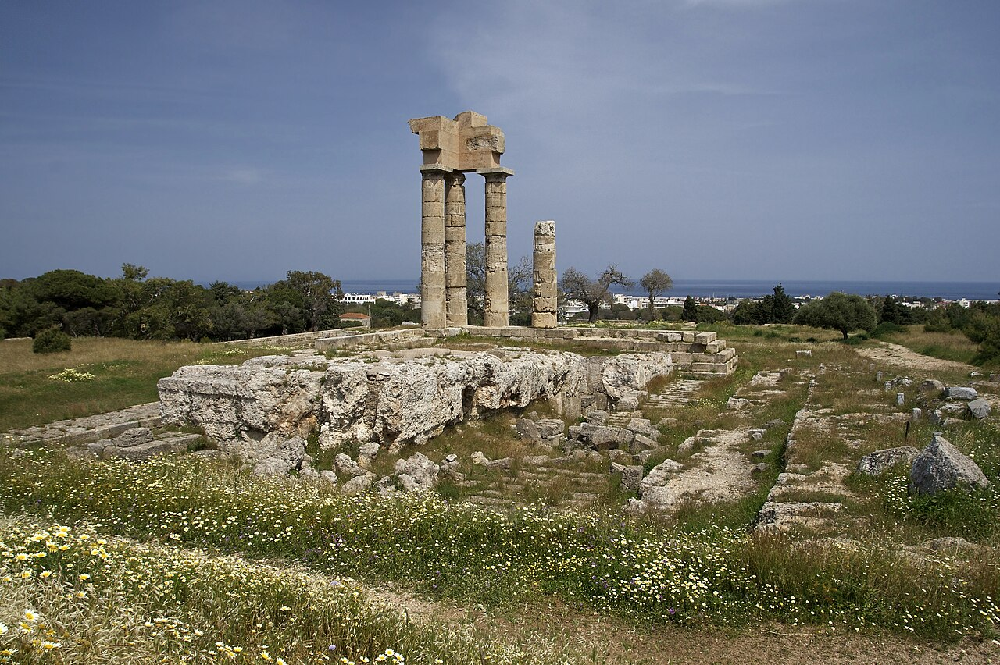
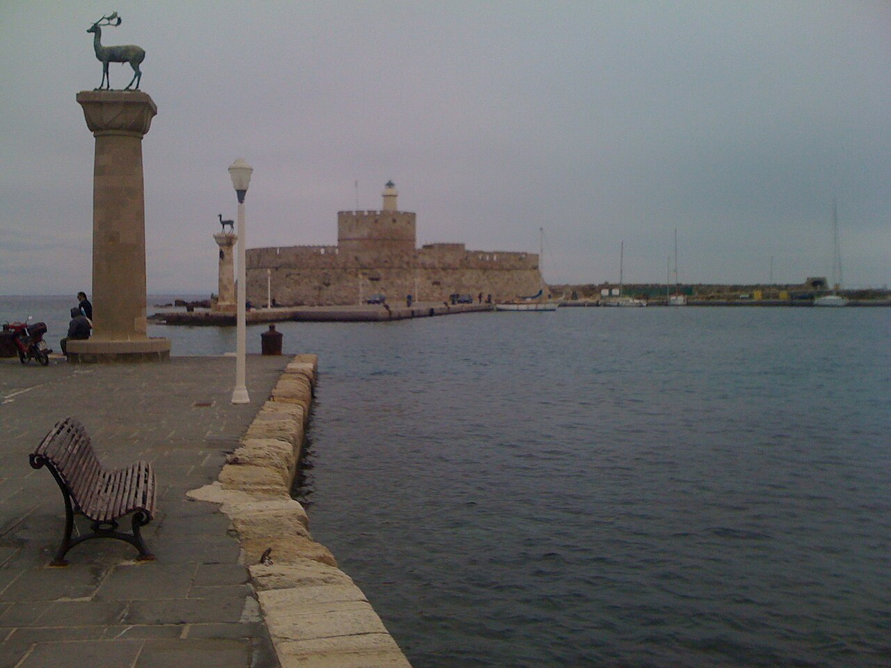
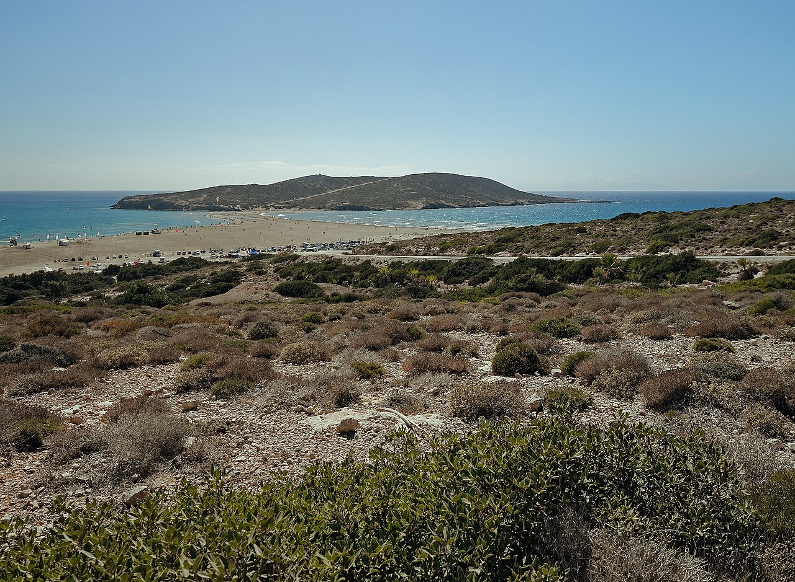
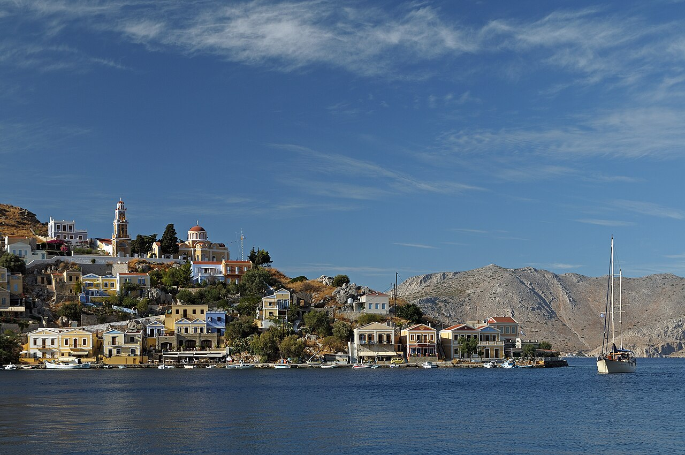

Rodi 2026 · Afandou
La guida è pronta.
Apri l’itinerario per scegliere il giorno, oppure trova subito un luogo.
Promemoria
Mattina: siti esposti
Pomeriggio: ombra e mare
Alternative: già pronte
Apri l’itinerario per scegliere il giorno, oppure trova subito un luogo.
Da ricontrollare: orari, prezzi, lettini, mare e il tour Symi cambiano. Nell’app le informazioni variabili sono marcate; verificatele 24–48 ore prima.
Il piano privilegia siti esposti al mattino, mare con ombra nelle ore calde e serate in paesi/taverne. I tempi di guida sono stime prudenti da Afandou.
Priorità vere, senza fingere che tutto sia imperdibile. Non sommate le spiagge alternative: sceglietene una.
Questa non è una lista di cose da aggiungere. È il filo che trasforma l’itinerario in una visita: Rodi è stata greca e mediterranea, poi dei Cavalieri, ottomana, ebraica, italiana e contemporanea.
Le tappe hanno già la loro scheda pratica. Qui trovate il contesto: leggete un capitolo prima della giornata oppure apritelo sul posto, senza la pretesa di “finire” la storia.

Rodi non nasce medievale. La città nuova, fondata tra il 408 e il 405 a.C. dalle comunità di Ialysos, Kamiros e Lindos, fu impostata secondo un disegno regolare attribuito a Ippodamo: strade, porti e quartieri si leggono ancora nell’orientamento generale, anche quando intorno vedete fortezze e moschee. Non state quindi dentro un “borgo antico” cresciuto a caso, ma nei margini di una capitale marittima progettata con intenzione.
Il Museo Archeologico e l’Acropoli di Monte Smith non sono due deviazioni scollegate: uno conserva oggetti e iscrizioni, l’altra restituisce la scala pubblica della città antica, con stadio, odeon e santuario di Apollo. Mandraki completa il triangolo: porto, altura civica e città bassa spiegano la vocazione commerciale di Rodi molto prima dei Cavalieri.
La fama del Colosso è utile se la usate come indizio di potenza ellenistica, non come caccia al punto esatto. La sua collocazione non è sicura e l’immagine del gigante a cavallo dell’imboccatura del porto non è un fatto archeologico. Ciò che conta è l’idea politica: una città marinara abbastanza ricca e sicura di sé da rendere la propria vittoria e il proprio dio visibili a chi arrivava dal mare.
Per questo Mandraki vale più di una foto ai cervi: è il luogo dove conviene immaginare navi, merci, alleanze e la continuità di una città che per secoli ha ragionato prima di tutto in termini di mare.
Lettura di base: RODI – Una guida alla storia e ai luoghi d’interesse, pp. 43–63 e itinerari cittadini; Marco Polo, orientamento e Rodi città. Accessi e orari da verificare sul sito ufficiale.
Dal 1309 al 1522 l’Ordine di San Giovanni trasformò Rodi in una piazzaforte e in un nodo marittimo. Palazzo, Via dei Cavalieri, Ospedale, fossato, porte e Forte di San Nicola facevano parte dello stesso sistema: una città che amministra, cura, accoglie e controlla l’accesso dal mare. Guardandoli separatamente si perde il ragionamento difensivo che tiene insieme la città alta e il porto.
Le “lingue” erano i gruppi territoriali dell’Ordine. Per questo la Via dei Cavalieri è più interessante quando la percorrete lentamente: non è una scenografia medievale, ma la strada delle locande e del potere, dove provenienze europee, gerarchie e denaro diventavano architettura. L’ex Ospedale, oggi Museo, ricorda che anche la cura e il prestigio erano strumenti politici.
Il Forte di San Nicola, il lato verso Acandia e le porte furono punti cruciali negli assedi ottomani. Nel 1480 la difesa resse; nel 1522 l’assedio durò mesi e la resa arrivò con difensori esausti e senza l’aiuto occidentale sperato. Non è la storia di mura “inutili”: è la misura di quanto questa città fosse difficile da prendere.
Quando sarete al Palazzo, cercate il punto di comando; al Forte, guardate l’imboccatura del porto. La distanza fra i due luoghi è esattamente il ragionamento dell’Ordine.
Lettura di base: guida storica, pp. 70–84 e itinerari 1–3; Marco Polo, Rodi città. Gli orari del Palazzo sono variabili: ricontrollateli prima della visita.
Dopo il 1522 la città non smette di essere importante: cambia comunità, lingue e geografie. La Juderia conserva la memoria sefardita; le moschee e i bagni raccontano la Rodi ottomana; le Marassi fuori dalle mura raccontano la città greco-ortodossa. Vicoli, piazze e luoghi di culto non sono un miscuglio pittoresco: mostrano una città mediterranea abitata da gruppi diversi, con rapporti di forza diversi.
Kahal Shalom non è un semplice “punto d’interesse”: è la sinagoga storica ancora attiva e il punto da cui capire una comunità fatta di commerci, famiglie, lingua e memoria. La visita va fatta con tempo, rispetto e senza forzare fotografie o ingresso. Se è chiusa, il quartiere non perde significato: cercate le sue strade e i suoi rapporti con il porto.
La storia ebraica di Rodi non finisce con gli edifici. Nel luglio 1944 la comunità fu deportata, con una perdita devastante. Questa parte richiede un tempo di lettura e non un tono da curiosità: il museo ebraico è il posto giusto per dettagli, testimonianze e contesto. Se la sinagoga è chiusa, la passeggiata nella Juderia mantiene valore purché non venga ridotta a scenografia.
La guida storica usa questa pluralità per correggere l’idea di una città soltanto dei Cavalieri. La Rodi di oggi è stata abitata e riscritta da più comunità.
Lettura di base: guida storica, pp. 85–95; Marco Polo, Rodi città. Giorno e orario del museo ebraico vanno sempre confermati.

Mandraki, Nea Agora, Palazzo del Governatore, Teatro, Kallithea, Filerimos, Eleousa e Kolymbia si collegano alla presenza italiana fra 1912 e 1943. È un tema molto visibile e spesso gradevole, ma non va letto come una cartolina nostalgica: restauro, infrastrutture, edilizia, turismo e propaganda appartengono allo stesso progetto coloniale.
Questa chiave rende il passaggio da Rodi città a Kallithea molto più sensato: non state unendo “centro storico + bagno”, ma due luoghi in cui il Novecento ha usato mare, architettura e passato dell’isola per costruire una nuova immagine di Rodi. Filerimos ed Eleousa spostano la stessa domanda nell’interno, tra paesaggio, strade e paesi rurali.
Il periodo italiano intervenne anche su monumenti medievali, siti e paesaggi. Alcuni restauri hanno salvaguardato strutture; altri hanno selezionato e messo in scena una certa immagine di Rodi. Questa ambivalenza è più interessante di un giudizio semplice: osservate ciò che è antico, ciò che è ricostruito e ciò che è stato reso “pittoresco” per chi arrivava sull’isola.
A Mandraki, fate un piccolo tratto Nea Agora → Annunciazione → Palazzo del Governatore → Teatro. A Kallithea, guardate prima padiglioni, geometrie e baia: poi il bagno resta bagno, senza che la storia gli rubi il pomeriggio.
Lettura di base: guida storica, pp. 96–108 e itinerario 4; Marco Polo, Mandraki, Kallithea e interno. Orari e tariffe di Kallithea vanno ricontrollati sul sito ufficiale.
Lindos non va consumata tutta nella salita all’Acropoli. Il santuario di Atena Lindia, la fortezza dei Cavalieri, le case dei capitani, la Chiesa della Dormizione e le due baie sono parti della stessa esperienza, ma hanno ritmi diversi. È una posizione usata per culto, controllo del mare e vita del borgo: proprio questa continuità la distingue da una semplice “acropoli con spiaggia”.
La sequenza migliore è: prima Acropoli, poi alcuni vicoli scelti del borgo, quindi Baia di San Paolo o spiaggia comoda. Agathi e Tsambika non sono tappe “da fare dopo”: sono la scelta mare del giorno. Dividere così la mattina evita di dare tutta l’energia alla salita e nessuna attenzione al paese che la sostiene.
Kamiros rende leggibile una città antica per terrazze, case e spazi pubblici; Lindos concentra santuario, altura, porto naturale e riusi successivi. Le due tappe non sono doppioni. A Lindos la domanda è “perché questo sperone controllava e attirava?”; a Kamiros è “come funzionava una città nella vita quotidiana?”.
La guida storica invita a tenere insieme i periodi: il santuario antico, la fortificazione medievale e le case del borgo non sono tre visite separate, ma le trasformazioni della stessa posizione sul mare.
Lettura di base: entrambi i PDF, in particolare guida storica, pp. 157–167. Biglietto e fasce d’accesso vanno confermati sul portale ufficiale.
Kamiros rende visibile una città antica diversa da Rodi: non un tempio isolato, ma una collina di terrazze, case, spazi pubblici e grandi strutture per l’acqua. Guardatela prima dall’alto, poi per quote. Filerimos riunisce invece l’acropoli dell’antica Ialysos, culto e panorama; la vista su costa, aeroporto e pianura chiarisce perché una comunità antica scegliesse quella collina.
Kritinia e Monolithos sono avamposti della rete dei Cavalieri, scelti per avvistamento e controllo della costa, non due castelli da collezionare. Kritinia entra più facilmente nel giro di Kamiros; Monolithos è più scenografico e più lontano. Esiste inoltre un entroterra montano che la settimana attuale non deve per forza forzare: Eleousa, Fountoukli, Profitis Ilias e Attaviros sono una vera opzione per un futuro ritorno o per una giornata da sostituire quando desiderate più paesi che mare.
Eleousa, Fountoukli, Profitis Ilias e Attaviros sono il controcampo dell’isola balneare: boschi, sorgenti, villaggi rurali, tracce italiane e strade di montagna. Non li abbiamo compressi nella settimana perché richiedono una giornata dedicata o condizioni che invitino davvero a lasciare il mare.
Se vento, stanchezza o voglia di paese cambiano il piano, scegliete una sequenza lenta: Eleousa e Fountoukli al mattino, sosta panoramica a Profitis Ilias, senza aggiungere anche Kamiros, Lindos o Prasonisi.
Lettura di base: guida storica, pp. 168–176 (itinerari costa ovest e montagna); Marco Polo, itinerari finali. Stato di strade e accessi va verificato prima di deviare nell’interno.

Il sud non va letto soltanto come la strada verso Prasonisi. Asklipio, Gennadi, Lachania e l’interno verso Moni Thari raccontano una Rodi più rurale, con chiese, castelli, campagna e villaggi lontani dal centro. È per questo che l’alternativa culturale della vostra giornata non è una versione impoverita del mare: è un’altra storia dell’isola.
Ad Asklipio il paese, il castello e la Chiesa della Dormizione formano una sequenza da percorrere con calma. Moni Thari aggiunge il lato monastico: un luogo di culto nell’interno, legato a una lunga stratificazione religiosa. A Gennadi tornate alla scala del paese e del pranzo; soltanto dopo scegliete il mare.
Asklipio → Moni Thari → Gennadi → spiaggia è una giornata coerente quando desiderate più interno o quando il vento forte svuota Prasonisi della sua parte piacevole. Tenete il ritmo basso: borgo e chiesa, monastero, pranzo, una sola spiaggia. È il contrario del giro da tredici ore: non copre l’isola, la rende leggibile.
Per le chiese valgono regole semplici: abbigliamento rispettoso, silenzio, nessuna certezza di apertura senza verifica sul posto. L’esperienza non dipende dal “fare tutte le foto”, ma dal tempo dato a un luogo ancora religioso.
Lettura di base: guida storica, pp. 177–183 (itinerario sud); Marco Polo, sud dell’isola e Prasonisi.

Symi merita la giornata perché cambia il punto di vista: arrivate dal mare in un porto a gradoni, con case neoclassiche, traffici marittimi e un paese che sale verso Chorio. Non va però trattata come una lista impossibile di porto, Panormitis, Chorio, pranzo, spiaggia e ritorno. Il programma scelto è volutamente più netto: bagno dalla barca a St George Bay e tempo libero vero a Gialos.
A St George Bay la barca offre quello che la strada non può: l’ingresso in una costa alta, un bagno con maschera e la possibilità di guardare la parete dalla prospettiva dell’acqua. A Symi città, invece, l’obiettivo è camminare senza ansia, scegliere il pranzo e capire l’ordine del porto; la spiaggetta urbana è un possibile extra, non un obbligo dopo il bagno in baia.
Panormitis è un luogo importante e merita una visita dedicata, ma non è compatibile con la giornata che desiderate: bagno dalla barca, tempo per Gialos e cammino tranquillo. Tentare di includerlo significherebbe togliere proprio ciò che rende Symi diversa dalla semplice traversata.
Marco Polo suggerisce Symi come isola da leggere nel porto e nei suoi ritmi. La nostra scelta è coerente: un tour che lasci tempo, non un trasferimento con fermate in serie.
Lettura di base: Marco Polo, sezioni su Symi e attività; guida storica, riferimenti negli itinerari. Operatore, ordine delle soste e sicurezza vanno confermati prima della prenotazione.
Per voi “autentico ed economico” non significa inseguire il locale sconosciuto perfetto. Significa cercare una taverna che lavori con ritmi normali: menu non interminabile, tavoli di famiglie o lavoratori, piatto del giorno, cucina che dice sinceramente cosa è finito e nessuno che vi trascina dal lungomare. Afandou, Archangelos, Gennadi, Apollona e i paesi dell’ovest sono contesti più promettenti delle zone costruite soltanto per il passaggio.
La tavola greca diventa più interessante se condividete: due o tre meze, un piatto caldo e verdure invece di un antipasto e un secondo a testa. Cercate pitaroudia, fava, dolmades, gemistà, verdure di stagione, stifado o carne al forno quando il menu lo rende credibile. Per un assaggio locale dolce, il melekouni è una buona domanda da fare; per il pesce, conta più il prodotto disponibile quel giorno che il nome “di lusso” sul menu.
Un posto semplice può essere turistico e un posto elegante può essere ottimo: gli indizi non sono prove assolute. Osservate menu, orario, clientela e se il personale sa spiegare cosa cucina oggi. Preferite un piatto ben fatto e una cena tranquilla a un itinerario gastronomico rigido; siete in vacanza, non in missione di valutazione.
Nel porto di Symi, a Lindos e nella città medievale l’affluenza turistica è fisiologica: qui puntate a pranzo presto, menu breve e ordine essenziale. Nei paesi, lasciate che sia il piatto del giorno a decidere. Orari, prezzi e singole insegne sono sempre controlli dell’ultimo momento, non promesse scritte in una guida statica.
Lettura di base: Marco Polo, pp. 16–19 (mangiare e bere) e pagine pratiche; selezione adattata alla vostra preferenza per cucina locale e spesa ragionevole.
Scegliete prima una rotta: la mappa mette a fuoco un luogo e il suo ordine. I filtri servono invece quando volete cercare un singolo POI.
Percorsi in caricamento.
Atlante
Con JavaScript vedrete qui la rotta scelta, le tappe in ordine e perché stanno insieme. Senza JavaScript, la lista di POI e tutti i link restano disponibili.
Questo visualizzatore non esegue JavaScript: aprite il file con Preview in Koder. I link qui sotto funzionano comunque.
Tutti i luoghi, in ordine di viaggio.
Rodi città medievale, per il mattino.
Salita presto, poi mare con ombrellone.
Archeologia della costa ovest, al mattino.
Monastero e panorama; breve ma esposto.
Bagno e servizi dopo Rodi città.
Sabbia e mare dolce: comfort dopo Lindos.
Grande spiaggia di sabbia; alternativa ad Agathi.
Snorkeling; baia piccola e con poca ombra.
Sentieri ombrosi e aria più fresca.
Istmo tra due mari; il vento decide l’esperienza.
Prima scelta tra i due castelli dell’ovest.
Più a sud e più scenografico.
Tour da prenotare con stop bagno e tempo libero.
Parcheggiate fuori e proseguite a piedi/navetta.
Suggerimento per cucina locale: apertura e prezzi da verificare.
Le spunte restano sul vostro telefono. Scegliete l’ombrellone a noleggio, non da comprare: cambierete spiaggia quasi ogni giorno.
Partite tra le 07:30 e le 08:30 per siti come Lindos, Acropoli di Rodi, Kamiros e castelli. Dalle 11:30 alle 16:30 scegliete lettino/ombrellone e acqua; le baie rocciose sono splendide ma riflettono molto sole. Due litri d’acqua per auto, cappello e scarpe con suola vera per acropoli e castelli.
Per Lindos: seguite i parcheggi all’ingresso e proseguite a piedi/navetta, senza inseguire il centro. A Prasonisi non entrate sulla lingua di sabbia con l’auto: il PDF segnala il rischio di restare bloccati. Costa ovest e sud: fate benzina prima di Gennadi e non programmate rientri al buio su strade secondarie.